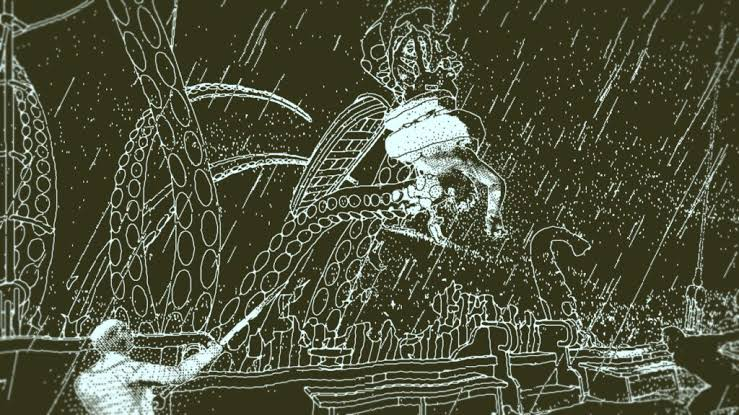
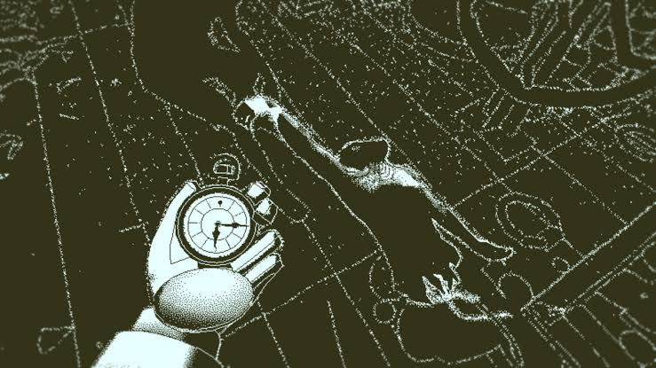
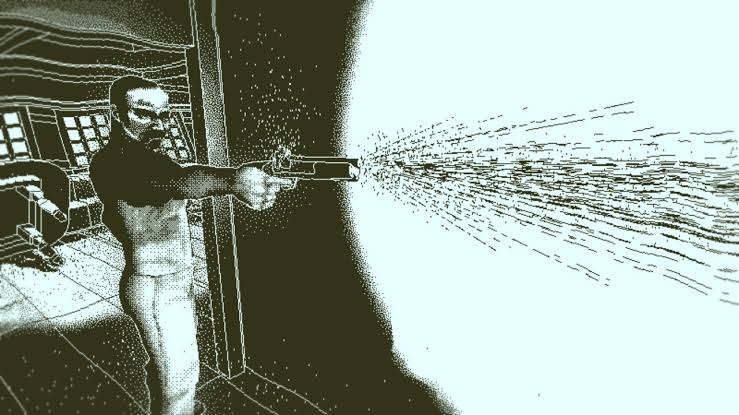

Sobre o jogo:
Return of the Obra Dinn é um jogo de investigação e
mistério no qual o jogador assume o papel de um investigador de
seguros enviado para descobrir o que aconteceu com a tripulação do
navio mercante Obra Dinn, que desapareceu no mar e
retornou anos depois sem praticamente nenhum sobrevivente.
Utilizando um misterioso relógio de bolso capaz de revelar os momentos
próximos à morte das pessoas, o jogador precisa explorar o navio e
reconstruir os acontecimentos. A partir das cenas, diálogos e pistas
encontradas, é necessário descobrir a identidade dos tripulantes, suas
causas de morte e quem foi responsável por determinados
acontecimentos.
Imagens:


Gameplay e Trailer:
Trilha sonora:
- Nome da faixa: Murder.
- Número da faixa: 3.
- Nome da faixa: The Calling.
- Número da faixa: 4.
- Nome da faixa: Unholy Captives.
- Número da faixa: 5.
Informações:
- Lançamento: 2018
- Desenvolvedora: Lucas Pope
- Publicadora: 3909 LLC